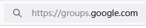
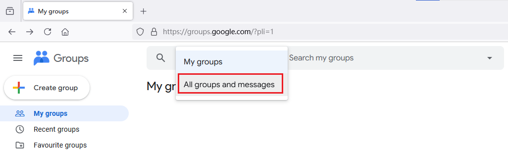
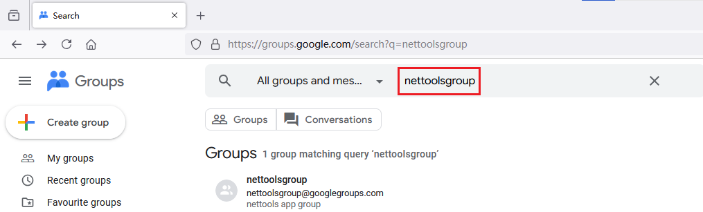
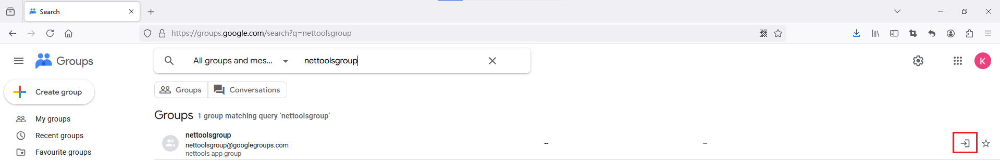
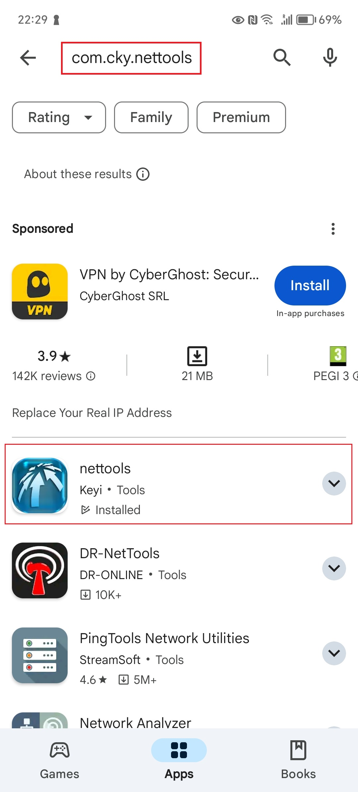

Google Play Store now requires that APP needs to pass the test of 20 people before applying for release. Currently, Net Tools is still in the testing phase.
According to Google's regulations, you need to follow the following steps to install the APP in the testing phase:
1) Visit https://groups.google.com in the browser and select Google account to log in

2) Click the drop-down box and change "My groups" to "All groups and messages"

3) Enter "nettoolsgroup" in the Search box, press Enter to search, and you will find the nettoolsgroup Group, which is described as "nettools app group"

4) Click to join, and then follow the prompts


Since the APP needs to pass the test of 20 people before it can be officially launched, if possible, please use this APP every day for 14 days, which will be considered a qualified test. Thank you for your help.